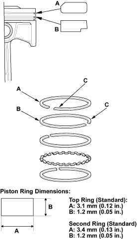
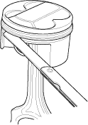

- Install the top ring and second ring as shown. The top ring (A) has a R1 mark and the second ring (B) has a R2 mark. The manufacturing marks (C) must be facing upward.

- Rotate the rings in their grooves to make sure they do not bind.

- Position the ring end gaps as shown:

- After installing a new set of rings, measure the ring-to-groove clearances:
Top Ring Clearance
Standard (New):
0.040 - 0.065 mm
(0.0016 - 0.0026 in.)
Service Limit:
0.13 mm (0.005 in.)
Second Ring Clearance
Standard (New):
0.045 - 0.070 mm
(0.0018 - 0.0028 in.)
Service Limit:
0.13 mm (0.005 in.)
